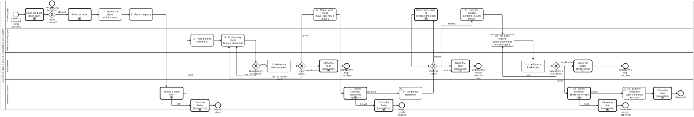

Generated from
cat-harness/skills/kg/graph-management/sub-kg-lifecycle.md— do not edit here.
Sub-KG lifecycle — staged here, separated later
Skill id:
sub-kg-lifecycle· Package:graph-managementProcess:sub-kg-lifecycle.bpmn
Owner, 2026-10-06: “if user creates it in a folio/, then it can move it to another repo later (this is essentially the create a sub-KG process and skills we have been doing in last week … once the sub KG is staged for separation in a repo, a new repo is created and staging contents copied into it)”.
This skill is that week, written down. Nothing in it was designed first. Every stage below is a step some session actually took, and each cites where. Where the week did something the hard way, the stage says what to do instead.
Which skill, this one or kg-separation?
| the graph | use |
|---|---|
| holds data — an artefact index, generated pages, a library, a folio — and leaves whole | this skill |
| holds data and the code that writes it, and the two must become a content repository and a tools repository | kg-separation — its fourteen stages, the pair, FR-7 |
| is not yet a graph at all — tangled into its host | graph-detanglement first |
The two share their gates on purpose. Ready to seed? here is the same
decision table, seed-readiness-gate.dmn, evaluated by the same command, and
the owner’s confirmations here are the same rule,
deletion-requires-confirmation.
What this skill adds is the part kg-separation does not cover: a sub-KG
born in the host, with no tools pair, that leaves in one piece.
How a sub-KG is born — the intent question
A content type’s own creation skill asks whether the new thing goes in a new
repository or inside this one, and routes here for the second answer. For a
folio in general that is getting-started’s
add-folio branch. A harness above this one may own a creation skill for its
own kind of graph; ask skill_list for it rather than improvising.
In-repository is the cheaper default whenever the session is already in a
harnessed repository. Every stage up to 6 is reversible with git revert, and
nothing outside the repository changes until stage 7. A new repository is the
first irreversible, outward-facing act, and this lifecycle puts it behind a
confirmation rather than at the start.
The stages
Each stage names its lane (a role in cat-harness/scenarios/roles.json) and
what decides that it is done. A stage is done when its check is green, never
when the work looks finished.
| # | stage | lane | done when | learned from |
|---|---|---|---|---|
| 0 | Brief, claim the bean | authoring-agent | bean claimed with bun run cat beans:claim | opening-brief |
| 1 | Declare it in place | authoring-agent | the declaration parses; instance-repositories.test.ts green | bean 6rmv (identity), dh4f (declare only what exists) |
| 2 | Grow it in place | authoring-agent | the content type’s own gates | the content type’s skill |
| 3 | Push generic down | platform-authoring-agent | check:import-direction, check:reference-direction, check:process-bindings add nothing | stages A–C of n3ni (#1768, #1782, #1783); stage D kg83 (#1795) |
| 4 | One import seam | platform-authoring-agent | every climb out of the directory goes through <name>/platform.ts | 6f19f9100 (#1767), a93da7d41 (#1860) |
| 5 | Rehearse self-contained | build-pipeline | bun run cat seed:ready --layer <name> --rehearse | rbz3 (fork rehearsal), hcpz (#1896) |
| 6 | Report what would move | authoring-agent | the report is in the bean | kg-separation stage 9 |
| 7 | Owner confirms: create the repository | administrator | an answer, recorded in the bean | separation arc G6 |
| 8 | Create the repository | administrator | it exists, empty, and was read before writing | separation arc G6/G7 |
| — | Ready to seed? | build-pipeline | seed-readiness-gate.dmn answers settled | hcpz |
| 9 | Copy the staged contents in, with history | authoring-agent | a reviewed PR on a branch of the new repository | n3ni stage E, the fork’s PR #5 |
| 10 | Re-point the declaration | platform-authoring-agent | the host is green consuming the new repository | separation arc G5, S8 |
| 11 | Verify on a fresh clone | build-pipeline | the new repository’s gates green from git clone in an empty directory | #2082, w1gy |
| 12 | Owner confirms: delete the in-repo copy | administrator | an answer, recorded in the bean | n3ni stage F, arc S8 |
| 13 | Cutover commit | administrator | one commit, revertable | kg-separation stage 13 |
1 · Declare it in place
A directory <name>/ at the host’s root, with <name>/<name>.json:
{
"name": "<name>",
"repository": "<owner>/<name>", // the PLANNED home; IRIs key on it
"livesAt": { "repository": "<owner>/<host>", "path": "<name>" }, // where it sits TODAY
"version": "0.1.0",
"needs": ["<the harness it instantiates>"],
"directories": [ /* only directories that exist, each with its graphTypologies */ ]
}
repositorydiffers fromlivesAt.repository— that difference is what makes the directory a staged instance, and it is what the separation guard andseed:readyread. Nothing lists the staged instances by hand.- The directory may sit anywhere — a root sibling is the precedent (the
owner chose a root sibling over a nested folder on 2026-09-21), but the
tools read
livesAt.path, sofolio/<name>/works the same. Scaffold it with
init-folio --staged <path>(owner ruling 1, 2026-10-06):bun run cat init-folio --staged <path> --title "<title>" \ --repository <owner>/<name> --needs <harness> # --host-repository when origin cannot sayIt writes exactly two files,
<path>/<name>.jsonand an empty<path>/platform.ts, and nothing at the host’s root;init-folio-staged.test.tssnapshots the whole host tree to hold that. Never--instanceinside a host: it writes a repository’s worth of scaffolding (AGENTS.md,.mcp.json, a beans store, a session hook; 15 files, measured with--dry-run).--instanceis for stage 8’s repository.- Declare a directory with its files, in one commit (bean
dh4f): a declared-but-absent directory is scanned as empty and reported clean.
3 · Push generic down — before the seam, not after
The week’s order was: move everything generic into the harness below (stages A–C), consolidate what the sub-KG needs into its own harness (stage D), and only then seed. Doing it the other way round copies generic code into a repository that has to give it back.
Wrong-direction edges hide in declarations and data, not only in imports.
The separation plan found six, and no import check had caught any of them: a
skill definition naming a package one layer up, a dependsOn, a publication
target enumerated in an input schema, prose links, and two needs edges to an
empty layer. So run all three direction checks, not one.
4 · One import seam: <name>/platform.ts
Every symbol the sub-KG uses from the platform is re-exported from one file, and nothing else in the directory climbs out of it. On the day it leaves, re-pointing the platform is a one-file edit instead of a sweep.
cat-harness-tools/scripts/tests/instance-separation-imports.test.ts is the guard.
It covers every instance whose repository differs from its
livesAt.repository — not only those that opted in, because the opt-in
version was silent in exactly the case it existed for: the one climb that
failed in the fork (pages-markdown.test.ts, #2082) sat in an instance with no
seam. Layers other instances build on are an explicit, checked exemption, and
an instance that still climbs has a ceiling that may only fall.
Create the seam at stage 1, not here. It costs one file on day one; the
week paid 25 reroutes in 10 files for one instance, then 17 more after a
single merge from main. A merge is where new climbs arrive, so a red guard
after one is the expected signal to reroute, not a regression.
5 · Rehearse self-contained — run the gates, do not scan
bun run cat seed:ready --layer <name> --rehearse --text # exit 0 settled, 1 not yet, 2 unknown
It copies the layer and what it needs into a scratch workspace of sibling
directories and runs the tests there. The fork rehearsal (rbz3) is why
this is a run rather than a reading:
- a static import scan found 20 of the 23 platform files the gates actually loaded; the other three load at run time, one of them a JSON code list read by URL;
- renaming the directory changed every generated page (2,153 of them),
because the URL prefix and a chrome lookup keyed on the directory name.
The fix (
853f9532) was to take the identity from the declaration’sname, never from the path. Check for that before seeding into a different directory name.
7 and 12 · The two confirmations
Both are userTasks in the administrator lane, marked relaxable="false",
and both follow deletion-requires-confirmation:
the agent reports what would happen, how large it is and how it is
undone, then waits. Silence is not a yes. The questions are numbered, four
options at most, the recommended one first, with a stated default:
Before stage 8:
<name>is staged and rehearses green: N files, M MB, history of K commits. Creating<owner>/<name>is visible outside this repository and is not undone by a revert. May it be created?
- Yes — you create it, and tell me when it exists (recommended)
- Yes — I create it (only if this session has that permission)
- Not yet — keep it staged here
Default if you do not answer: 3. Nothing is created.
Before stage 13:
<owner>/<name>is green from a fresh clone and the host consumes it. The in-repo copy is N files. Deleting it is one commit, revertable.
- Delete the in-repo copy now (recommended)
- Keep it until the new repository’s first release
- Show me the file list first
Default if you do not answer: 2. Nothing is deleted.
When the repository must be created by someone with credentials this session
lacks, the hand-over is agent-handoff:
one bean, one sentence for the person to relay.
9 · Copy the staged contents in, with history
The staged directory becomes the new repository’s content with its
history: git subtree split --prefix=<name> in the host, then
git subtree add (or a merge of the split branch) in the new repository.
The first fork seed carried 378 commits this way. It goes in on a branch,
as a draft PR, never straight to main (separation arc S7). The new
repository’s own root files — its declaration at the root, its config, its
README — are a second commit in the same PR, so the copy itself stays
byte-identical and reviewable.
Ready to seed? comes first, at seed time, because the tree has moved since
the rehearsal: every open PR touching the layer when the copy is taken is
orphaned. Its criteria and thresholds are in
kg-separation §”Ready to seed?”, and not restated here.
10 · Re-point the declaration
| what changes | how |
|---|---|
livesAt | removed in the new repository — absent means “sits at the root of repository” |
| the seam | platform.ts points at wherever the platform now is: a remote-mounted path, or a sibling checkout |
| the host | remote mount if the host imports code from the sub-KG — a source.remote instance in the host’s root index.config.json (remote-mount; never a submodule, owner 2026-10-06); subscription (kg:subscribe) if it only reads its content (separation arc G5) |
| pins | the host pins a commit while staging, a version once released (upstream-version-adoption) |
| its site | the new repository publishes and previews itself (feature-staging, Which site): "site": { "agentRun": true } in its index.config.json when an agent publishes it, plus whatever workflow its publisher layer’s own creation skill requires (an IG’s AST-cache refresh, for one) |
| its checks | .github/workflows/harness-pr-checks.yml calling the tools layer’s layer-pr-checks.yml, so its gates run on every pull request |
.gitignore | the mount block, written by the mount tool between its own markers. Never typed: a hand-written marker makes remote-mount.ts refuse (markers unpaired) |
Copy these from a sibling repository of the same kind; never type them. Every row above was missing or wrong in a repository scaffolded by hand on 2026-10-15. Its site could not be built until each was copied in.
The host keeps its own copy through this stage. The re-point is additive.
11 · Verify on a fresh clone
bun run cat sub-kg:verify-clone --repo <owner>/<name> --ref <seeding branch> --text # exit 0 green, 1 red, 2 unknown
The Tool sub-kg-verify-clone (owner ruling 2, 2026-10-06) clones the new
repository into an empty scratch directory with its submodules (and each
--sibling beside it), installs, and runs its own gates script, else its
test script. An empty tree, a failed clone or a repository with no gate is
unknown, never green. The measured falsifier
(#2082): the first seeded fork’s test failed with
Cannot find module '../../../<harness>/…', because nothing in a seed runs
standalone until the seam is re-pointed. A rehearsal in the host’s scratch
space is not this check; it shares the host’s node_modules and network.
The new repository’s own site is part of this check:
bun run cat stage:local --repo . --dry-run from the
fresh clone must build. A refusal names what stage 10 left out.
What the week did NOT settle
The owner ruled on three questions on 2026-10-06 (bean 3tza): “1 2 y / 3
read only mirror in fsh-guts”.
- Ruled and built:
init-folio --staged(stage 1) andsub-kg:verify-clone(stage 11). - Ruled and built: stage 13 (owner, 2026-10-06, “1”). After cutover the
host keeps a frozen copy in
fsh-guts, not a refreshed mirror and not a deletion. Step 12 asks (1) move to fsh-guts now, (2) keep in place until the first release, (3) show the file list first, default (2). Step 13 deposits the directory into the PARENT’s fsh-guts as a verified archive, then removes it frommain(owner, 2026-10-06, choosing this archive form over plain trees, which CI then audited as live content). The deposit is the onestate:seed --cutovermakes for a state graph: an archive that must extract to the exact tree being removed, plus a provenance note (movedFrom,movedOn,sourceCommit,tree), and the removal commit is made only once it has landed. A separation targets the parent’s fsh-guts rather than the departing instance’s, which--cutoverdoes not do; the separation mode is follow-up work to #2322. The live copy is the remote mount (index.config.jsonsource.remote), npm package retrieval (kg-retrieve-npm), or subscription (kg:subscribe) from stage 10; the frozen one is never refreshed and never rendered.
How checks treat a frozen subtree
This is the one place the rule is stated; scanners point here. A frozen
subtree is one retired item, and its sibling note is the node that answers
for it. Every reader of fsh-guts — the fsh-guts.jsonld export, the
fsh-guts page, the render-pipeline and bean-reference tests,
check:materialized-fixity — reports the note and does not enter the
directory. The page shows it as one row in the via sidecar state.
- Recognised by declaration, never by path. A directory is frozen because
<name>.mdbeside it declares$schema: folio-fsh-guts/v1andkind: separated-instance(isFrozenSubtreeinschemas/fsh-guts.ts). A copy dropped in with no note, or under a note of another kind, is walked like any directory, so its files fail self-declaration loudly rather than vanishing from every check. - The note must carry all four stage-13 fields —
movedFrom,movedOn,repository,matchesCommit— because it is now the only thing any check reads about thousands of files. Those beyond the common set are exported under the node’sdata. - Materialization records inside are not judged. They claim bytes in the repository the graph now lives in, which the copy deliberately does not carry.
- The note’s
bean:resolves against main’s work plan, with no pending escape. So the deposit lands on the fsh-guts branch in the same step that merges the PR carrying that bean, never before it. The first cutover (2026-10-06, bean61t6) was pushed ahead of its PR and turned every PR’s CI red until it was held back.
Anti-patterns
- Creating the repository first. It is the one irreversible step; everything that can be done in place is done before it.
- A seed with no history. A one-commit seed severs blame for every line, and the history is cheap to keep.
- Re-pointing by sweep. If more than one file changes when the platform moves, the seam was skipped.
- Reading the rehearsal as the fresh-clone check. They catch different things: the rehearsal catches climbs, the fresh clone catches everything the host’s environment was quietly supplying.
- Deleting the in-repo copy because the new repository is green. Green is the precondition for asking, not the answer.
- Committing mounted directories to the host repository. Remote mounts
populate instance directories locally. If
.gitignoredoes not ignore the mounted paths, external files pollute downstream git status.index.config.jsonmust generate gitignore entries for allremoteMounts. - Breaking dependents when dependencies fold. If a dependency layer folds
into another (e.g.
cat-openapiintocat-harness), downstreams that still reference the folded layer fail unlessFOLDED_INSTANCE_ALIASESmaps them. - Separating before resolving withheld asset clearance. If library items are withheld or unpermitted in the separated repository (as with the IRIS replica), materialization results in broken links. Clearance must be verified at seed time.
Processes that run this skill
This skill has its own process: A sub-KG is staged in place, then leaves for its own repository.

| process | step(s) that name it |
|---|---|
| Mount a declared subgraph | Resolve the subgraph’s content source; Use the checkout path in place; Mount the branch tip at the declared path; Refuse: no flow for this source kind |
| A sub-KG is staged in place, then leaves for its own repository | 1 · Declare it in place, with its seam; 2 · Grow it in place; Should it leave now?; 4 · Route every climb through platform.ts; 5 · Rehearse self-contained; 8 · Create the repository; 9 · Copy the staged contents in, with history; 10 · Re-point: livesAt, seam, submodule or subscription; 11 · Verify on a fresh clone |